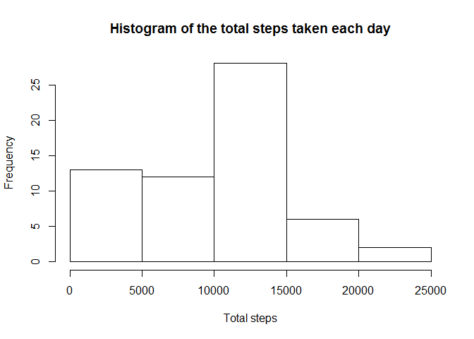
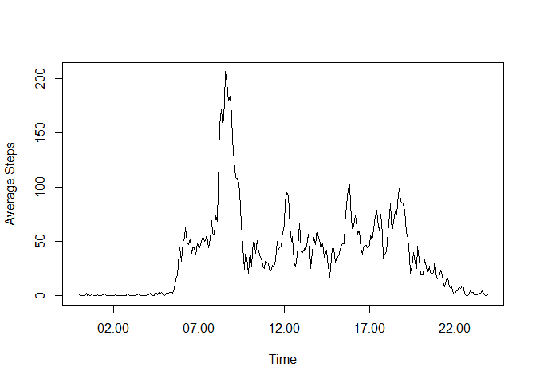
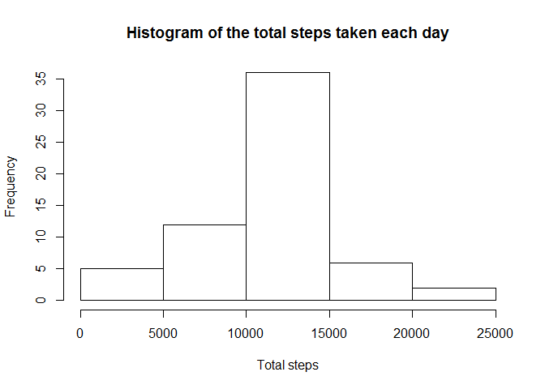
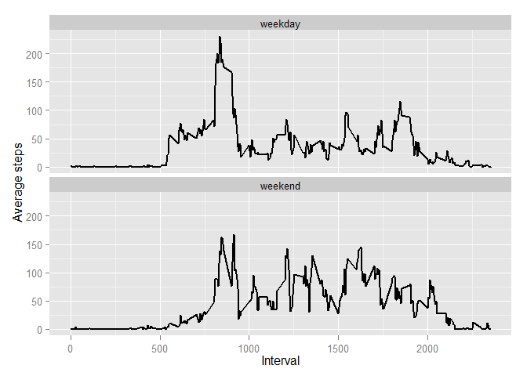

Please ensure that activity.zip file is available in the current working directory. Unzip the data file and load the data into activity data frame
if(!file.exists(activityFile)){
unzip(zipFile)
}
activity <- read.csv(activityFile)Summarise the activity data to group by date ignoring the missing values. This summarised data is used to plot the histogram of the total number of steps taken each day.
activityByDay <- summarise(group_by(activity, date), totalSteps = sum(steps, na.rm = TRUE))
hist(activityByDay$totalSteps, main = "Histogram of the total steps taken each day", xlab = "Total steps")
Note that barplot should not be used here. Please refer to forums for more details: https://class.coursera.org/repdata-016/forum/thread?thread_id=3
mean(activityByDay$totalSteps)## [1] 9354median(activityByDay$totalSteps)## [1] 10395Summarise the activity data to group by interval ignoring the missing values. Add a new column to indicate time using a dummy date. This summarised data is used to plot the time series graph.
activityByInterval <- summarise(group_by(activity, interval), avgSteps = mean(steps, na.rm = TRUE))
activityByInterval$time <- seq(ISOdate(2000,1,1,0,0,0), by="5 min", length.out = length(activityByInterval$interval))
plot(x = activityByInterval$time, y = activityByInterval$avgSteps, type = "l", xlab = "Time", ylab ="Average Steps")
activityByInterval[which.max(activityByInterval$avgSteps), 1:2]## Source: local data frame [1 x 2]
##
## interval avgSteps
## 1 835 206.2The above 5-minute interval contains the maximum number of steps on average across all the days.
sum(!complete.cases(activity))## [1] 2304The above number indicates the total number of rows with missing values in the dataset.
The strategy used by me for filling the missing values is to use the mean for that 5-minute interval assuming that the pattern in activity remains more or less same.
Based on the strategy selected, the activity dataset is merged with the activityByInterval and wherever Steps data is missing, it is filled up by corresponding mean value of the steps for the given interval.
activityNew <- merge(activity, select(activityByInterval, interval, avgSteps), by="interval")
activityNew$steps[is.na(activityNew$steps)] <- activityNew$avgSteps[is.na(activityNew$steps)]activityNewByDay <- summarise(group_by(activityNew, date), totalSteps = sum(steps))
hist(activityNewByDay$totalSteps, main = "Histogram of the total steps taken each day", xlab = "Total steps")
mean(activityNewByDay$totalSteps)## [1] 10766median(activityNewByDay$totalSteps)## [1] 10766The values differ from the estimates from the first part of assignment and both mean and median has increased. The histogram of total number of steps taken each day has also become more normal.
activityNew <- mutate(activityNew, daytype = as.factor(ifelse(weekdays(as.Date(date)) %in% c("Saturday","Sunday"),"weekend","weekday")))Summarise the data based on the newly created factor variable to indicate day type and interval. Plot the graph to show average number of steps taken for weekdays and weekends.
activityDay <- summarise(group_by(activityNew, daytype, interval), avgSteps = mean(steps))
g <- ggplot(activityDay, aes(interval, avgSteps)) + geom_line(size = 1) +
facet_wrap(~ daytype, nrow = 2, ncol = 1) +
labs(x = "Interval") + labs(y = "Average steps")
print(g)